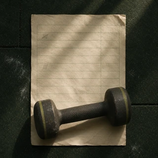
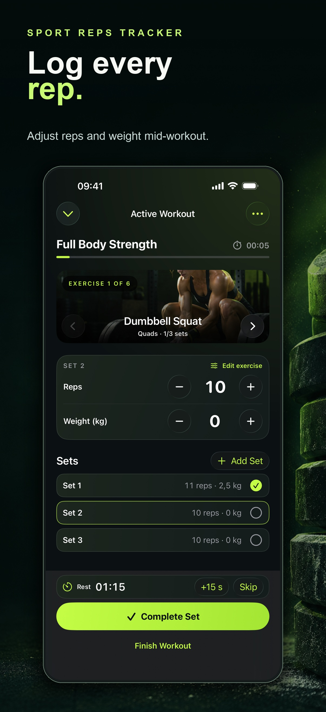
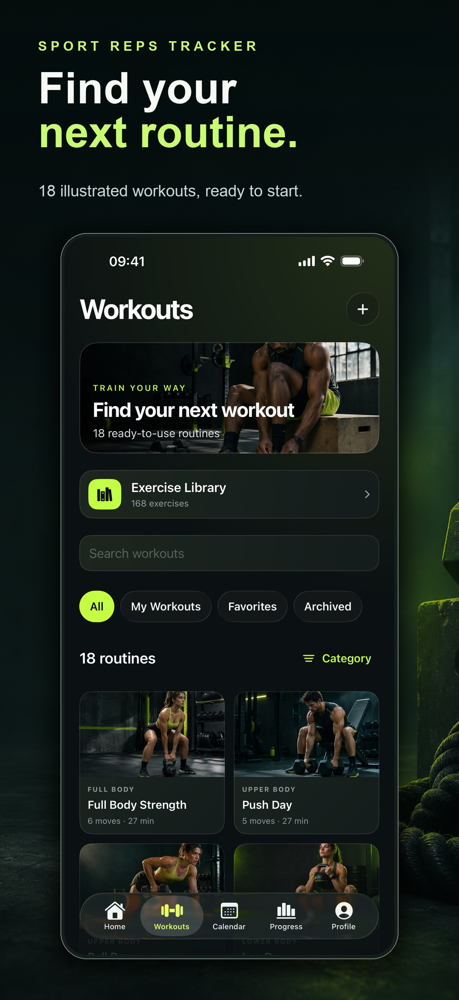
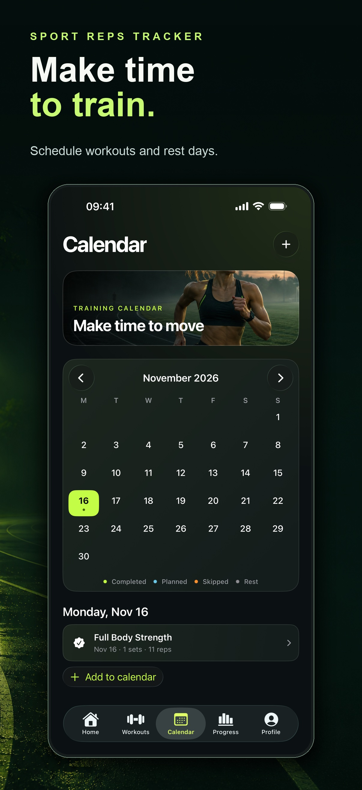

Free on iPhone and iPad
Sport Reps Tracker
Plan your workouts, log every set, and see what you did last time. Start with one of 18 illustrated routines or choose from 168 exercises to build your own.



Schedule workouts and rest days, review your progress, and keep a backup you control. The app works offline and requires no account.